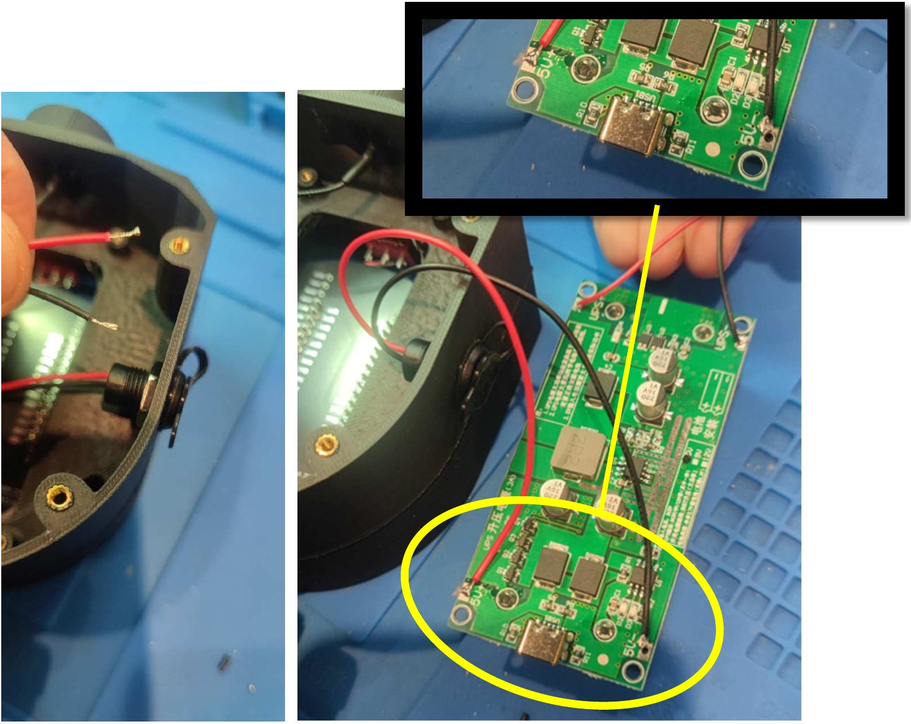
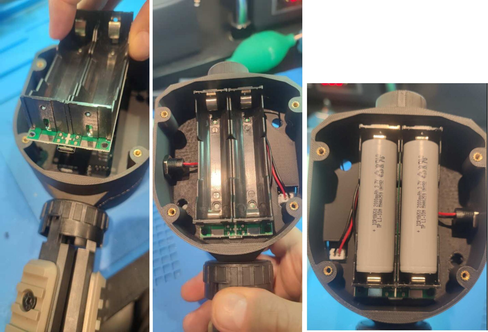

USB-C chassis wires


UPS module going in, mounted, then with batteries fitted
Fast charging: if you want fast charging, use the enclosure designed for it. The fast-charge input is the USB-C port on the UPS board itself. Never use the chassis input and the fast-charge input together.